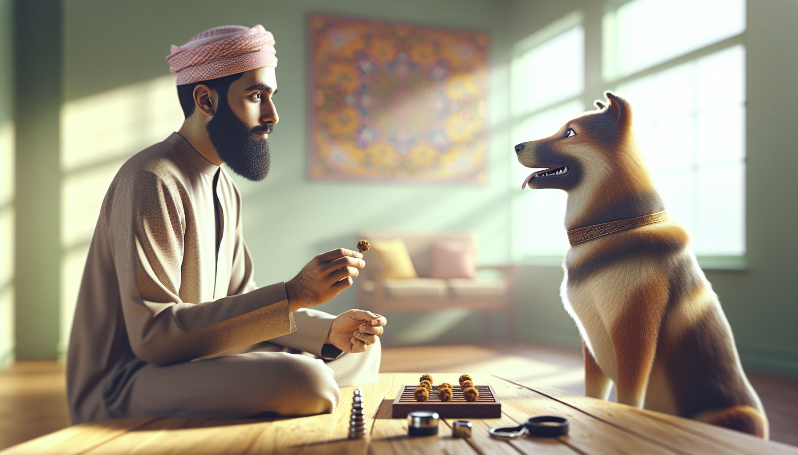

If you have ever felt like dog training requires hours of practice, perfect timing, and endless patience, here is the good news: real progress often comes from short, consistent sessions. In fact, one of the most effective ways to improve your dog’s behavior is with a simple 15-minute daily training routine.
Whether you are raising a new puppy, helping a rescue dog settle in, or trying to teach your adult dog better manners, a focused daily routine can dramatically improve attention, impulse control, confidence, and communication. Dogs learn through repetition, clarity, and reinforcement. That means small daily wins matter more than occasional marathon sessions.
This science-backed routine is designed to work for almost any dog because it builds the core skills that support everything else: engagement, calmness, responsiveness, and self-control. Best of all, it is realistic for busy dog owners.
Below, you will learn exactly how to use 15 minutes a day to create a calmer, more responsive, and more connected dog.
Dogs do not learn best when they are overwhelmed, tired, or confused. Short sessions help keep training clear and successful. Research in animal learning consistently supports the idea that frequent, rewarding practice strengthens behavior more effectively than long, inconsistent sessions.
Here is why a 15-minute dog training routine works:
It fits into real life. Consistency is easier when the routine feels manageable.
It keeps your dog engaged. Most dogs learn better in short bursts than in lengthy drills.
It reduces frustration. You are less likely to lose patience, and your dog is less likely to shut down.
It builds habits. Daily repetition turns desired behaviors into reliable responses.
It strengthens your bond. Training becomes a positive shared activity, not a stressful task.
The key is not doing more. The key is doing the right things consistently.
Before beginning your daily routine, gather a few basics. You do not need fancy equipment, but you do need the right setup.
High-value treats: Soft, pea-sized rewards your dog loves
A marker: A clicker or a clear word like “yes”
A leash: Helpful for puppies, rescues, or easily distracted dogs
A quiet space: Start indoors or in a low-distraction area
The right mindset: Aim for progress, not perfection
If your dog is energetic, anxious, or easily distracted, let them sniff outside or walk for a few minutes before training. A dog who has had a chance to move and decompress will often focus better.
Keep sessions upbeat. Use rewards generously. End before your dog gets bored. If something is too hard, make it easier rather than repeating cues louder or faster.
This routine is broken into five simple 3-minute blocks. You can do them all at once or split them throughout the day. The structure stays the same, but the exercises can be adjusted for puppies, rescue dogs, and adult dogs.
Start by teaching your dog that paying attention to you is rewarding. This is the foundation for every other skill.
Say your dog’s name once. When they look at you, mark and reward.
Take a few steps backward. When your dog follows, mark and reward.
Reward offered eye contact, even for one second.
Practice simple hand targeting: present your hand, and reward your dog for touching it with their nose.
This section is especially powerful for newly adopted rescue dogs who are still learning that you are predictable and safe. It also helps puppies build focus in a distracting world.
Do not overuse your dog’s name. The goal is to make it meaningful, not background noise.
Next, work on body control and responsiveness by practicing position changes. These exercises improve listening skills and help your dog learn to follow cues clearly.
Ask for a sit, mark, and reward.
Lure or cue a down, mark, and reward.
Encourage your dog back to a stand, mark, and reward.
Mix the order once your dog understands the game.
Why does this matter? Position changes teach your dog to think, not just react. They also improve coordination and create opportunities to reward calm behavior.
For puppies, keep expectations low and use food lures if needed. For older or larger dogs, make sure surfaces are not slippery and movements are physically comfortable. If your dog seems stiff or reluctant, check with your veterinarian before continuing.
A reliable recall can be lifesaving, and it begins with fun, easy practice. During this block, make “come” one of the best words your dog hears all day.
Move a few steps away and cheerfully say, “Come!”
When your dog reaches you, mark and reward generously.
Add gentle collar touches while rewarding so your dog does not learn to dodge you.
Play recall ping-pong between two people if available.
Never call your dog to scold them, end fun abruptly, or do something they dislike. If “come” predicts the end of freedom every time, your dog will naturally hesitate.
For rescue dogs, use a long line outside until recall is truly reliable. Trust and safety come first.
This part of the routine teaches your dog that patience pays off. Impulse control is the secret ingredient behind polite greetings, loose-leash walking, and calmer behavior around food, doors, and distractions.
Practice leave it with a treat in your closed hand. Reward your dog for backing off or looking away.
Practice wait before placing a food bowl down.
Ask for a short pause at doorways before going through.
Reward your dog for four paws on the floor instead of jumping.
These exercises help your dog learn that self-control gets access to rewards. That is a major shift in behavior. Instead of lunging, grabbing, or bursting forward, your dog starts offering calmer choices.
Keep this section easy at first. A one-second wait is still a win.
Many owners spend all their training time on active behaviors and forget to teach relaxation. But a dog who can settle is easier to live with, easier to take places, and often less reactive overall.
Toss a treat onto a mat or bed.
When your dog steps onto it, mark and reward.
Reward any calm behavior on the mat: sitting, lying down, or resting a hip.
Add a cue such as “place,” “bed,” or “settle.”
This exercise is excellent for puppies who struggle with over-arousal and rescue dogs who need help feeling safe in the home. Over time, your dog learns that calmness is something you notice and reward, not just something that happens by accident.
End the session quietly. A calm finish helps your dog transition from training mode back into daily life.
The structure stays the same, but your expectations should match your dog’s age, history, and emotional state.
For puppies: Keep sessions playful and very short within each block. Use more rewards, simpler goals, and lots of encouragement. Focus on attention, handling, recall, and calmness.
For rescue adopters: Prioritize trust and predictability. Avoid overwhelming your dog with too many cues too soon. If your dog is nervous, spend more time on engagement, hand targets, and mat work before increasing difficulty.
For adult dogs: Raise criteria gradually. Ask for slightly longer waits, better recall under mild distraction, and more polished responses. But keep the training positive and achievable.
No matter your dog’s background, success comes from meeting the dog in front of you, not the dog you wish you had by next week.
Even the best routine can stall if a few common errors creep in. Watch out for these:
Training too long: Stop while your dog is still engaged.
Repeating cues: Say it once, then help your dog succeed.
Moving too fast: Add difficulty gradually.
Only training when there is a problem: Practice skills before you need them.
Skipping rewards too soon: Reinforcement is how behavior grows stronger.
If your dog struggles, that is not failure. It is feedback. Adjust the environment, lower the challenge, and make the next repetition easier.
The most transformative dog training routine is not the most complicated one. It is the one you can actually do every day. In just 15 minutes, you can build focus, responsiveness, impulse control, and calmness in a way that carries over into real life.
For dog owners, new puppy parents, and rescue adopters, this routine offers something even more important than obedience: a better relationship. Your dog learns how to succeed, and you learn how to communicate clearly and kindly.
Start today. Keep it short. Keep it positive. A few intentional minutes each day can truly transform any dog.
Get our full Dog Training eBook series — new titles added weekly.